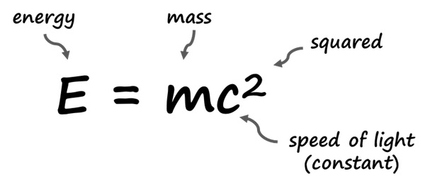
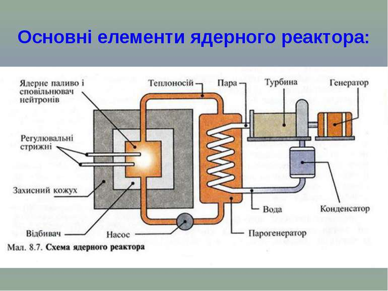
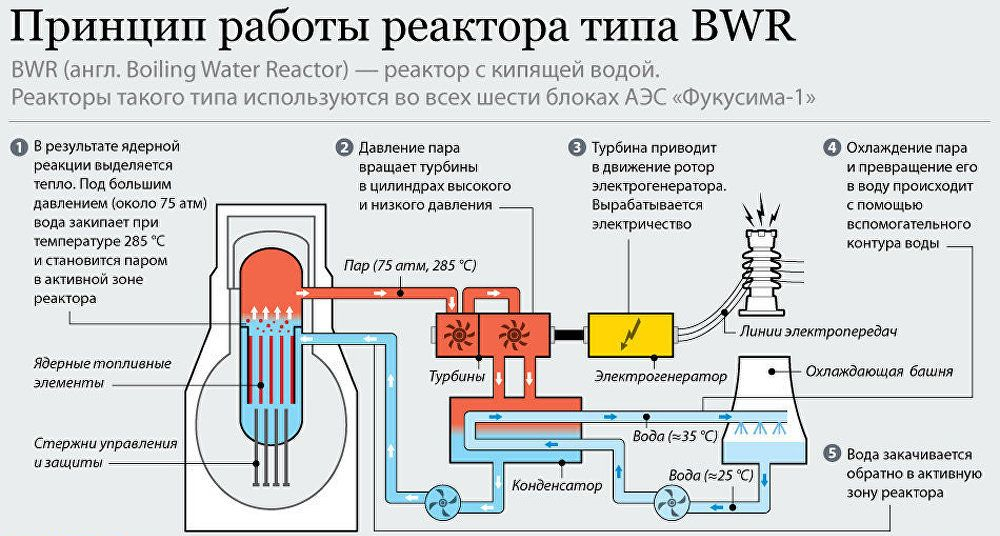
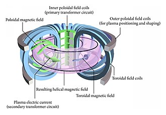
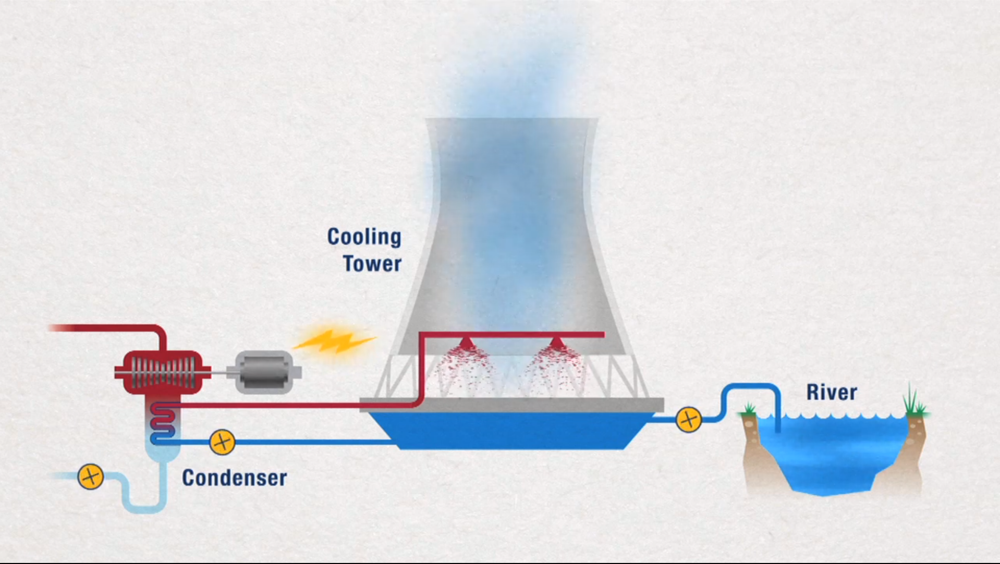
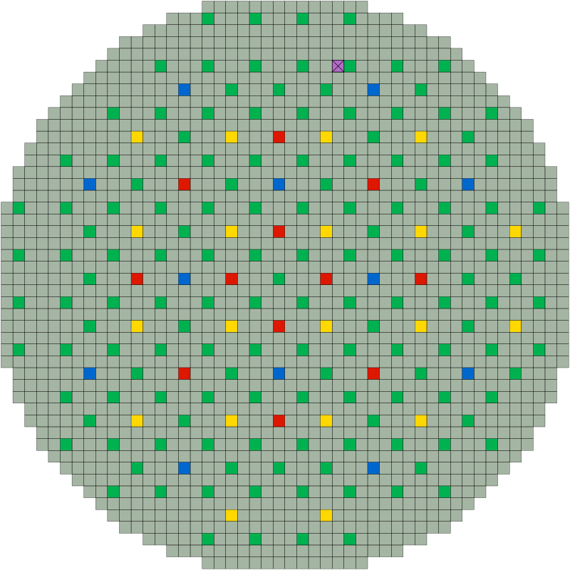
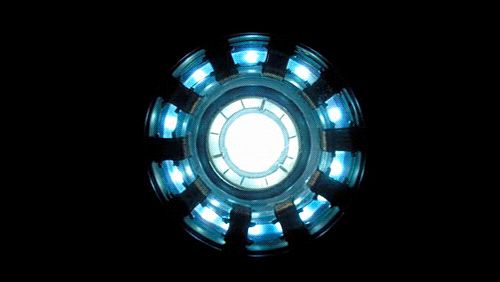

Fullscreen mode
Just press »F« on your keyboard to show your presentation in fullscreen mode. Press the »ESC« key to exit fullscreen mode.
Overview mode
Press "Esc" or "o" keys to toggle the overview mode on and off. While you're in this mode, you can still navigate between slides, as if you were at 1,000 feet above your presentation.
OpenGL - PATTERN FOLDER
Lesson 0
Author: Egoshkin Danila Igorevich
E=mc^2
c - the speed of light in vacuum, equal to 299,792,458 m/s.
Something wrong...


Chernobyl Nuclear Power Plant
Nuclear power plant - Bad Scheme
Nuclear power plant - Good one Scheme
Nuclear power plant - The best one Scheme
WT... ???
Gradieren - Градирня - Atmospheric tower (Cooling tower)
Gradieren - Градирня - Atmospheric tower (Cooling tower)
https://www.youtube.com/watch?v=Gouq8epjX5Y
Humidifier - Зволожувач повітря
Vavilov-Cherenkov effect

Chernobyl Nuclear Power Plant
Cold fusion arc
Cold fusion arc
https://youtu.be/qDr5CF2_kMY